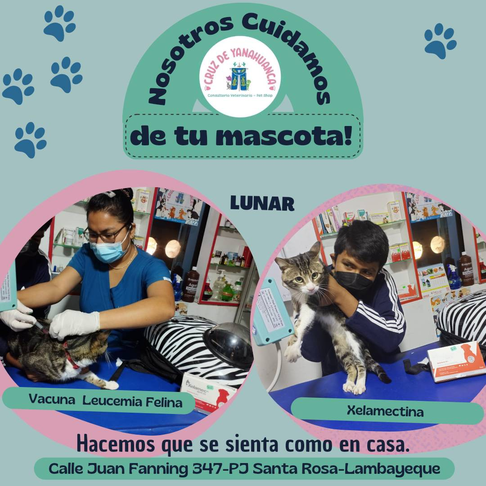
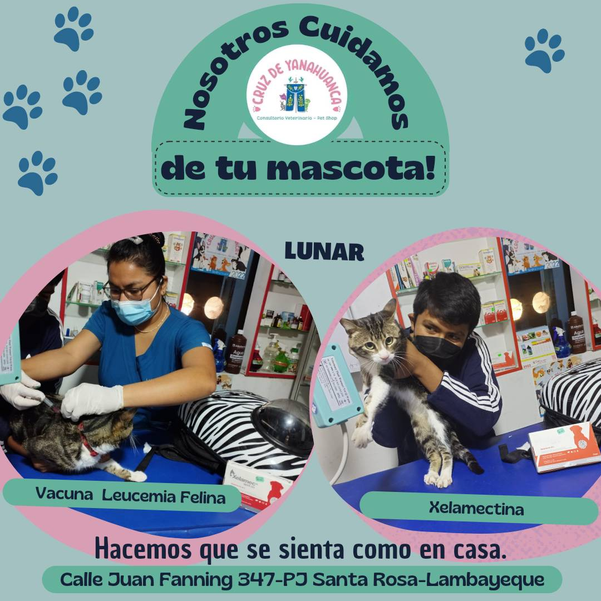

BIENVENIDOS

Somos encargados de evaluar, pronosticar y tratar a los animales enfermos y heridos, También ofrecemos asesoría a los dueños sobre el cuidado asignado hacia sus mascotas en casa.
Cuidado de los animales


Somos encargados de evaluar, pronosticar y tratar a los animales enfermos y heridos, También ofrecemos asesoría a los dueños sobre el cuidado asignado hacia sus mascotas en casa.
Cuidado de los animales